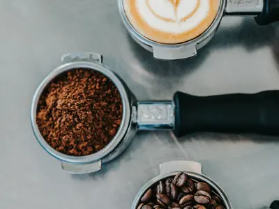
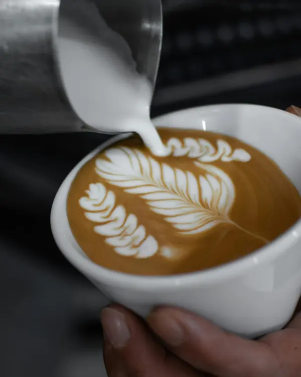
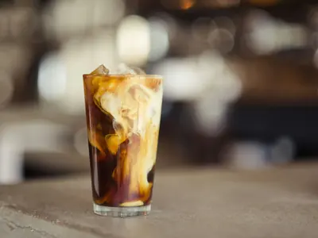
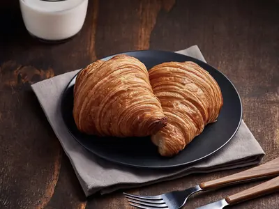
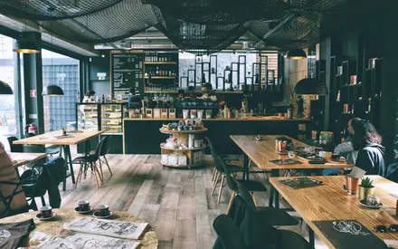
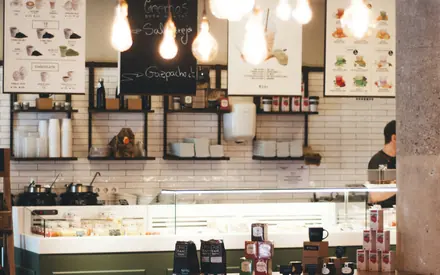
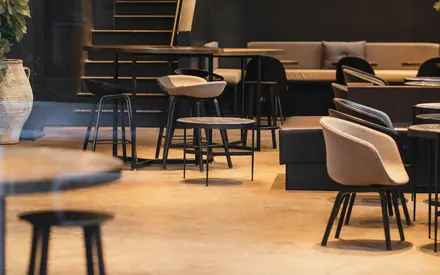
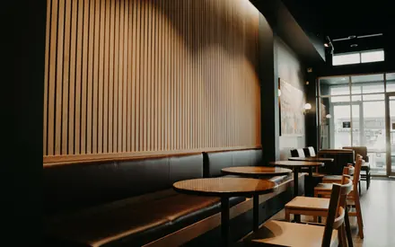
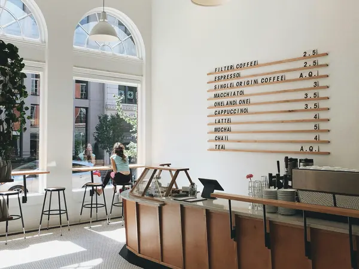

Coado no panoCaparaó do dia, 200 mlR$ 9,00
Grão do Caparaó capixaba, moído na hora e passado no coador de pano, uma xícara de cada vez. Para tomar aqui ou levar pronto.

O café moído grosso descansa na geladeira de um dia para o outro. Sai encorpado, doce e com pouca acidez.
O leite gelado entra devagar e desenha o café no copo. Também sai puro, ou com leite de aveia.
A garrafa de 500 ml para levar para casa sai por R$ 28 e dura cinco dias na geladeira.
Cada pedido é moído na hora, passa pelo pano e chega à mesa em uns quatro minutos.



Também tem espresso (R$ 7), pão de queijo (R$ 6) e bolo do dia (R$ 10). Leite de aveia sem custo a mais.
Água a 92 °C, quatro minutos de paciência e um balcão onde dá para ver tudo acontecendo.




